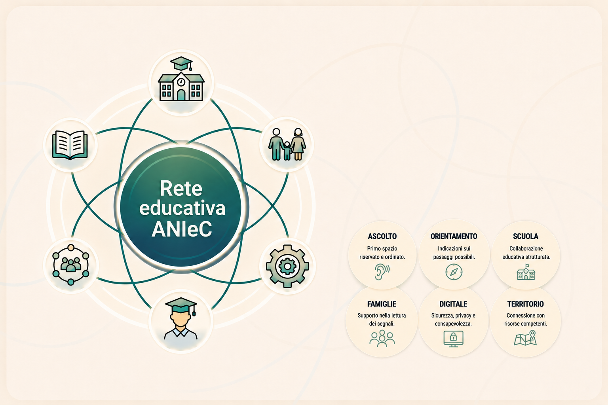

Bullismo e Cyberbullismo educare, prevenire, intervenire.
Un’area ANIeC dedicata a studenti, famiglie, scuole e territorio: non una campagna emotiva, ma un progetto educativo e operativo per riconoscere le dinamiche di prevaricazione, costruire cultura digitale e attivare percorsi di ascolto, orientamento e prevenzione.
Creare contesti sicuri prima dell’emergenza.
Bullismo e cyberbullismo non sono semplici litigi tra pari: sono dinamiche relazionali che possono coinvolgere potere, isolamento, ripetizione, esposizione digitale e difficoltà degli adulti nel leggere ciò che accade.
ANIeC lavora su prevenzione, orientamento e rete: non sostituisce scuola, servizi, autorità o professionisti competenti, ma aiuta a mettere ordine, comprendere i passaggi e attivare risposte proporzionate.
Riconoscere la dinamica è il primo passo per non ridurla a un episodio isolato.
Il lavoro preventivo richiede parole chiare, lettura dei comportamenti e attenzione al contesto relazionale, scolastico e digitale.
Bullismo
Comportamenti intenzionali, ripetuti o sistematici che possono colpire una persona attraverso esclusione, offesa, umiliazione, pressione, minaccia o aggressione.
Cyberbullismo
Prevaricazioni realizzate tramite strumenti digitali: social network, chat, messaggi, immagini, video, diffusione di contenuti o manipolazione dell’identità online.
Segnali da leggere
Isolamento, calo scolastico, ansia, rifiuto della scuola, cambiamenti improvvisi nell’uso del telefono o paura di essere esposti possono essere indicatori da non ignorare.
Risposta adulta
La reazione degli adulti deve essere proporzionata, non impulsiva: ascolto, raccolta dei fatti, protezione della persona e attivazione dei canali corretti.
Prevenire significa allenare competenze prima che la difficoltà diventi emergenza.
La prevenzione non è una lezione occasionale. È un percorso che unisce competenze digitali, educazione alle relazioni, responsabilità, linguaggio, gestione del gruppo e consapevolezza delle conseguenze online e offline.
Comprendere il digitale significa proteggere relazioni, identità e crescita.
Il cyberbullismo non nasce solo online. Nasce nelle relazioni, nel linguaggio, nell’isolamento e nella mancanza di consapevolezza. Per questo la risposta deve essere educativa, adulta e territoriale.
Un supporto costruito intorno alle persone, non al singolo episodio.
Studenti, famiglie, scuola e territorio vengono accompagnati con percorsi diversi, ma coordinati.
Supporto studenti
Uno spazio di ascolto e orientamento per chi subisce, osserva o teme una dinamica di bullismo o esposizione digitale.
- Ascolto riservato e non giudicante
- Aiuto nel ricostruire ciò che accade
- Orientamento sui passi sicuri
Orientamento famiglie
Supporto ai genitori per comprendere segnali, evitare reazioni dannose e dialogare con scuola o servizi competenti.
- Lettura dei segnali di disagio
- Gestione del primo colloquio
- Preparazione del confronto con la scuola
Supporto scuola e docenti
Collaborazioni educative, incontri informativi e progettazione di percorsi preventivi per classi, gruppi e comunità scolastica.
- Incontri con studenti e famiglie
- Laboratori tematici
- Supporto alla cultura preventiva
Educazione digitale
Percorsi su social, chat, immagini, privacy, consenso, reputazione online, linguaggio e responsabilità nella comunicazione.
- Uso consapevole dei social
- Rischi delle condivisioni impulsive
- Comportamenti sicuri online
Progetti territoriali
Azioni costruite con realtà locali, scuole, famiglie e soggetti del territorio per rendere stabile la prevenzione.
- Reti educative locali
- Incontri pubblici
- Campagne progettuali non banali
Orientamento e tutela
Quando emergono contenuti online, minacce, diffusione di immagini o profili falsi, il servizio aiuta a individuare i canali adeguati.
- Raccolta ordinata delle informazioni
- Indicazioni sui canali istituzionali
- Invio a figure competenti se necessario
Educare alla consapevolezza significa costruire relazioni più sicure.
ANIeC promuove un approccio educativo, responsabile e territoriale, dove studenti, famiglie, scuola e adulti di riferimento diventano parte della prevenzione.
Dal primo ascolto alla progettazione: un percorso ordinato e proporzionato.
Ascolto e comprensione
Si ascolta il racconto, si individua il contesto e si separano fatti, percezioni, segnali e possibili urgenze.
Lettura della dinamica
Si ricostruiscono episodi, messaggi, ruoli del gruppo ed elementi utili da conservare.
Orientamento e protezione
Si definiscono i passaggi più sicuri: famiglia, scuola, protezione digitale e supporto qualificato.
Connessione con la rete
Quando necessario, si favorisce il collegamento con scuola, servizi e figure competenti.
Laboratorio relazioni e gruppo classe
Attività su rispetto, esclusione, linguaggio, ruoli del gruppo, spettatori, responsabilità e gestione dei conflitti.
Incontro famiglie
Strumenti per leggere segnali, dialogare con figli e scuola, evitare minimizzazione o sovraesposizione e attivare i canali corretti.
Formazione docenti
Approccio preventivo, osservazione delle dinamiche, gestione del primo ascolto, documentazione essenziale e collaborazione educativa.
Sportello orientativo
Spazio programmato di ascolto e orientamento per studenti, famiglie o adulti di riferimento, con procedure chiare e riservatezza.
Progetto territoriale
Percorso più ampio con incontri, azioni comunicative, rete locale, monitoraggio e materiali educativi per la comunità.

Risposte mirate per ragazzi, famiglie e percorso ANIeC.
Domande distinte per bullismo, cyberbullismo e orientamento operativo, senza appesantire la pagina.
Ragazzi e studenti
Famiglie e genitori
Cosa può fare ANIeC
Richiedi ascolto, orientamento o informazioni per un progetto educativo.
Usa questo modulo per un primo contatto. Non inserire dati inutilmente sensibili: descrivi in modo sintetico il bisogno, il ruolo da cui scrivi e il tipo di supporto richiesto.
Costruire prevenzione significa proteggere relazioni, crescita e futuro.
ANIeC APS promuove un modello di prevenzione che unisce ascolto, educazione, scuola, famiglia e territorio. Un progetto serio non nasce dalla paura, ma dalla competenza condivisa.